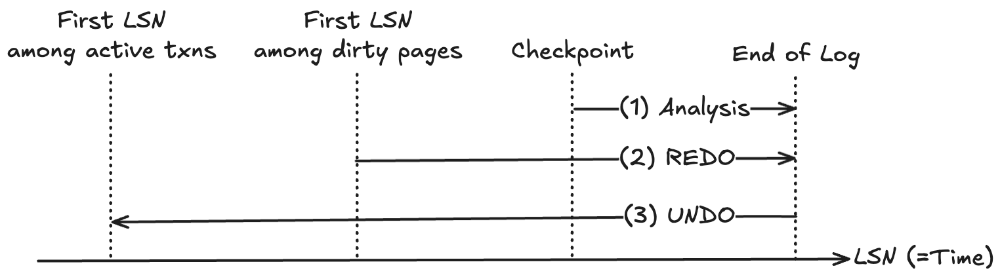
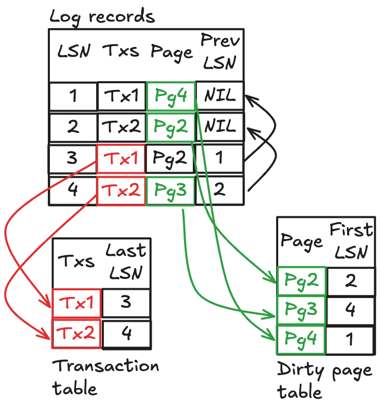

참고한 것들
란?
- Algorithms for Recovery and Isolation Exploiting Semantics (ARIES) 는 DBMS 의 recovery protocol 중 하나이다.
- 이놈이 집중하고 있는 것은, STEAL + NO_FORCE 정책에서의 recovery 이다.
- 즉, uncommit update 가 flush 될 수 있고 (STEAL), Commit 되어도 flush 되지 않을 수 있는 (NO_FORCE) 상황에서의 recovery protocol 인 것.
- 참고로 ARIES 에서는 Physiological logging 을 한다고 한다.
- 92년도에 나온 논문인데 (이거), 아직까지도 많이 사용된다. 이놈의 작동과정에 대해 간단하게 알아보자.
ARIES

- ARIES 는 크게 세 phase 로 진행된다.
- Analysis phase: 여기서는 마지막 Checkpoint 를 보면서 이 당시에 어떤 Transaction 들이 살아있었는지, 그리고 어떤 Page 들이 dirty 였는지를 확인한다.
- Redo phase: 그리고 여기서는 위에서 식별한 dirty page 들에 대해, 시간순 (LSN 순) 대로 Log 를 적용하며 최신의 상태로 복구한다.
- Undo phase: 여기서는 마지막 log 부터 거슬러 올라오면서, 위에서 식별한 transaction 들에 대해 만약 이놈들이 commit 되지 않고 죽었으면 시간 (LSN) 의 역순대로 log 의 내용을 revert 하며 uncommitted data 를 정리한다.
- 이 과정은 recovery 뿐 아니라 일반적인 tx abort 시에도 rollback 에 동일하게 사용된다.
- 각 과정을 좀 더 구체적으로 살펴보기 전에, 어떤 자료구조들이 사용되는지 알아보자.
Data structure

- ARIES 에서는 두 가지의 자료구조를 관리한다.
- Transaction table: Active tx table
- Dirty page table: Dirty page table
- 그리고 이들의 스냅샷이 Checkpoint 에 포함되게 된다.
- 또한 log 에도 PrevLSN 이라는 field 를 새로 추가해 logging 을 한다.
Checkpoint) Transaction Table, LastLSN
- Transaction table 은 말 그대로 active tx 들을 모아놓는 table 이다.
- 여기서 “active” 라는 말은, commit 되지도, abort 되지도 않은 상태의 tx 를 의미한다.
- 이 table 에는 tx ID 와 더불어 이놈의 마지막 LSN (LastLSN) 을 저장한다.
- 즉, 이놈이 마지막으로 수행한 작업에 대해서도 같이 적어놓는 것.
- 이것을 적어놓는 이유는 생각해보면 당연하다: Transaction table 은 UNDO phase 에서 사용되기 때문에, rollback 을 위한 첫 entrypoint LSN 은 tx 의 마지막 LSN 일테니까.
Checkpoint) Dirty Page Table, RecoveryLSN (FirstLSN)
- Dirty page table 에는 dirty page 들이 모여있다.
- 여기서 “dirty” 라는 말은, 변경되었지만 flush 되지는 않는 page 들을 의미한다.
- 이 table 에는 page ID 와 더불어 이놈을 처음으로 dirty 상태로 만든 log 의 LSN (RecoveryLSN 혹은 FirstLSN) 을 적어놓는다.
- 이것도 적어놓는 이유는 당연하다: Dirty page table 은 REDO phase 에서 사용되기 때문에, recovery 를 위한 첫 entrypoint LSN 은 처음으로 page 를 dirty 로 만든 놈일테니까.
Log entry) PrevLSN
- 이놈은 log entry 에 추가된 새로운 field 로, 같은 tx 에 대해 이전에 수행한 LSN 을 적어놓는 곳이다.
- 따라서 이 field 덕에 tx 별 LSN 이 linked list 처럼 묶이게 된다.
- 만약에 새로운 log 가 생성되면, 동일한 tx 의 이전 log 의 LSN 이 여기에 적히고, 이 새로운 log 의 LSN 이 Transaction table 의 LastLSN 에 적힌다.
Recovery Phases
- 그럼 이제 어떤 phase 들을 거쳐서 recovery 가 되는지 알아보자.
1) Analysis phase
- 우선 가장 최신의 checkpoint 를 찾아 읽는다.
- 그럼 이 checkpoint 가 생성될 당시의 context (즉, active transaction 들과 - Transaction table - dirty page 들 - Dirty page table) 를 알게 된다.
- 그리고 여기부터 log 를 시간순 (LSN 순) 대로 쭉 읽으며, 이 Transaction table 과 Dirty page table 을 업데이트한다.
- 즉, 이렇게 하면 마지막 log 가 생성되었을 당시의 context 를 알 수 있게 된다.
- 업데이트하는 것은 다음의 과정으로 수행된다.
- 만약 새로운 tx 가 시작되면, 이것을 Transaction table 에 추가한다.
- 만약 abort 혹은 commit log 를 발견하면, 해당 tx 를 Transaction table 에서 삭제한다.
- 만약 update log 를 발견하면, (만약 없다면) 해당 page 가 Dirty page table 에 등록되고, 등록한 entry 의 RecoveryLSN 을 이 LSN 으로 등록하며, Transaction table 에서 LastLSN 을 이 LSN 으로 수정한다.
2) REDO phase
- 그 다음에는 Dirty page table 의 entry 들 중 RecoevryLSN 의 최소값에서부터 REDO 를 시작한다.
- 즉, 이 지점이 현재 등록된 dirty page 들 중 가장 먼저 page 를 dirty 로 만든 곳이기 때문.
- REDO 를 하는 것은 다음과 같이 수행된다.
if:만약 log 가 가리키는 page 가 dirty 하지 않다면,then:해당 log 를 무시한다.
else if:만약 log 가 가리키는 page 의 Dirty page table entry 에 있는 RecoveryLSN 값이 현재 log 의 LSN 보다 크다면,then:해당 log 를 무시한다.- 이것은 해당 page 는 이 log 가 아닌 추후의 log 에서 dirty 가 되었다는 뜻이기 때문이다.
else if:만약 log 가 가리키는 page 에 적인 LSN 이 현재 log 의 LSN 보다 크다면,then:해당 log 를 무시한다.- 일단 page 에 적힌 LSN 은 이 page 를 마지막으로 수정한 log 의 LSN 인데,
- 지금 page 를 disk 에서 읽어들이고 있으므로 해당 LSN 까지는 disk 에 안전하게 저장되었음을 시사하는 것이기 때문에 무시한다.
else:log 에 적힌대로 REDO 를 한다.
- 여기까지 오면 DB 가 crash 나기 직전의 상태까지 오게 된다.
3) UNDO phase
- 근데 그렇다고 이게 다가 아니다: crash 직전의 상태로 돌아오기는 했지만, crash 직전에 실행되고 있던 tx 들은 지금은 다 죽었으므로, 해당 tx 들의 작업 내용을 싹 다 원상복구해 atomicity 를 보장해야 한다.
- UNDO 를 하는 것은 간단하다.
- Transaction table 에 active tx 들의 마지막 LSN (LastLSN) 들이 있고 (즉, iteration entrypoint),
- 각 log 에는 이전 log (PrevLSN) 가 적혀있으므로 (즉, next node),
- 이것을 쭉 따라가며 UNDO 를 하면 된다.
- 여기서의 포인트는 REDO phase 와는 다르게 UNDO phase 에서는 조건을 따지지 않고 그놈을 revert 해주면 된다는 것이다.
- 또한 만약 recovery 도중에도 DB 가 자꾸 crash 나는 상황에도 대비하기 위해, log 하나를 UNDO 하고 난 뒤에는 Compensation Log Record 를 추가한다.
- 이놈은 UNDO 도중에 DB 가 restart 해 다시 recovery 를 하는 상황에서, 이 log 를 읽고 이전까지 UNDO 가 진행된 지점으로 돌아갈 수 있게 해준다.